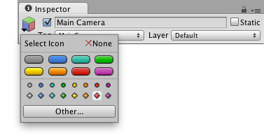
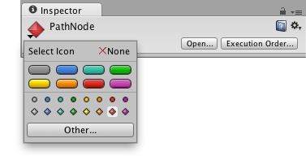
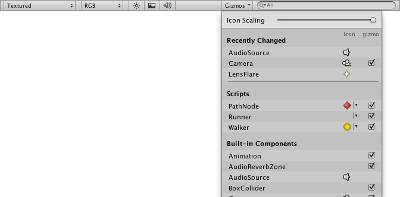

Gizmo and Icon Display Controls
Gizmos and icons have a few display options which can be used to reduce clutter and improve the visual clarity of the scene during development.
The Icon Selector
Using the Icon Selector, you can easily set custom icons for GameObjects and scripts that will be used both in the Scene View and the Inspector. To change the icon for a GameObject, simply click on its icon in the Inspector. The icons of script assets can be changed in a similar way. In the Icon Selector is a special kind of icon called a Label Icon. This type of icon will show up in the Scene View as a text label using the name of the GameObject. Icons for built-in Components cannot be changed.
Note: When an asset's icon is changed, the asset will be marked as modified and therefore picked up by Revision Control Systems.

Selecting an icon for a GameObject

Selecting an icon for a script
Showing and Hiding Icons and Gizmos
The visibility of an individual component's gizmos depends on whether the component is expanded or collapsed in the inspector (ie, collapsed components are invisible). However, you can use the Gizmos dropdown to expand or collapse every component of a given type at once. This is a useful way to reduce visual clutter when there are a large number of gizmos and icons in the scene.
To show the state of the current gizmo and icon, click on Gizmos in the control bar of the Scene or Game View. The toggles here are used to set which icons and gizmos are visible.
Note that the scripts that show up in the Scripts section are those that either have a custom icon or have an OnDrawGizmos () or OnDrawGizmosSelected () function implemented.

The _Gizmos dropdown, displaying the visibility state of icons and gizmos_
The Icon Scaling slider can be used to adjust the size used for icon display in the scene. If the slider is placed at the extreme right, the icon will always be drawn at its natural size. Otherwise, the icon will be scaled according to its distance from the scene view camera (although there is an upper limit on the display size in order that screen clutter be avoided).